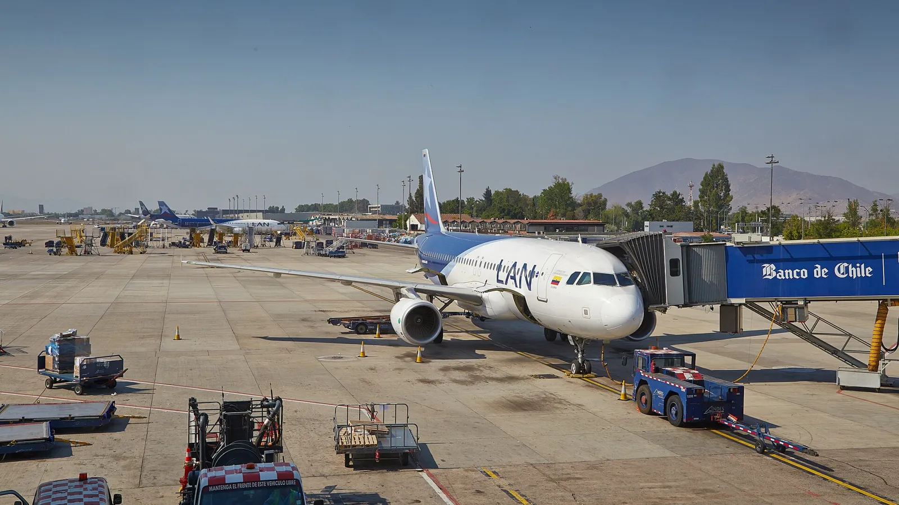
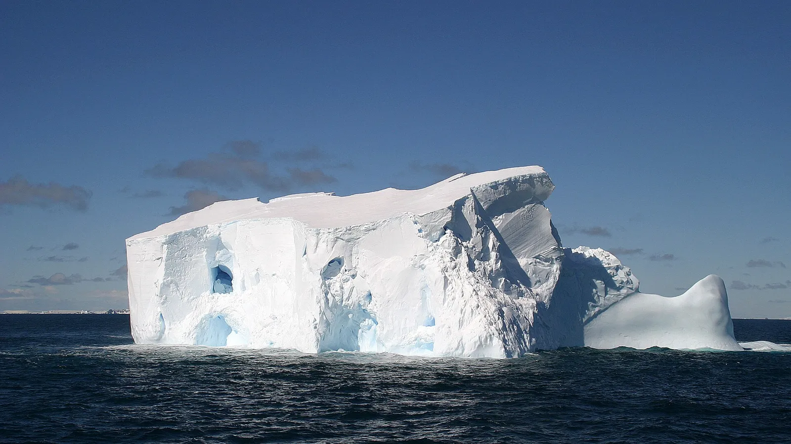
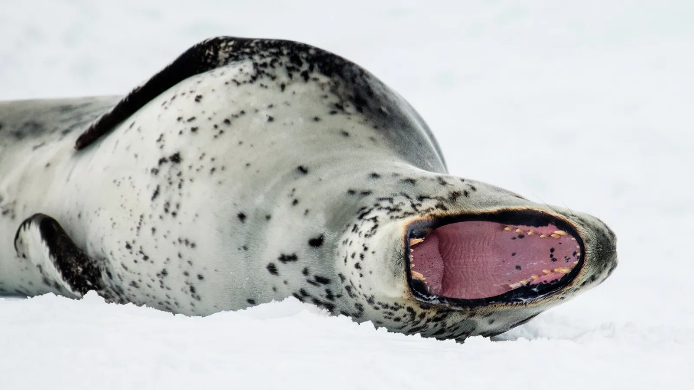
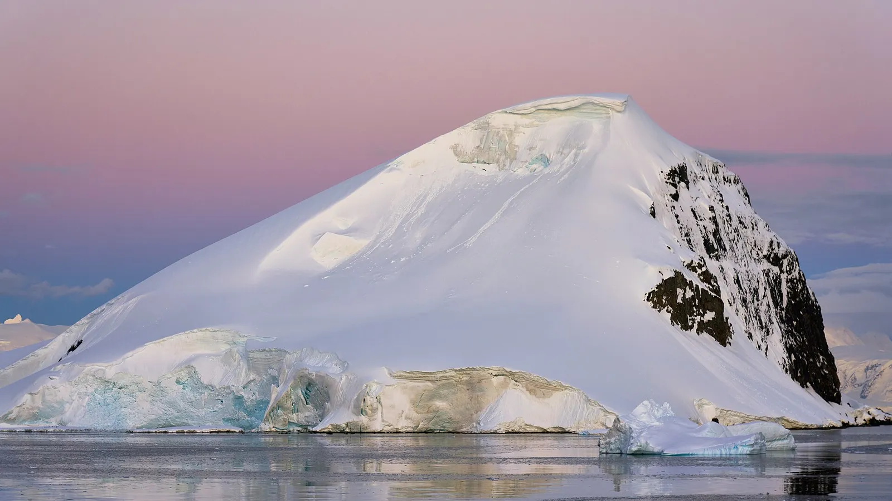
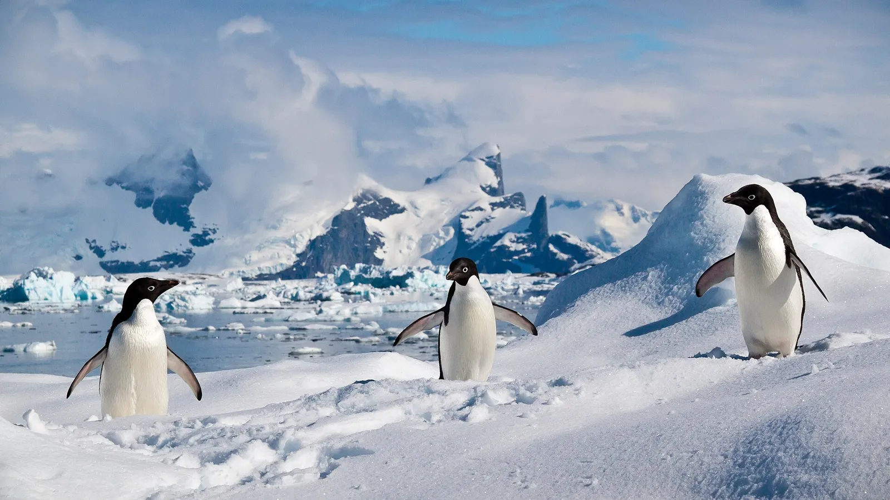
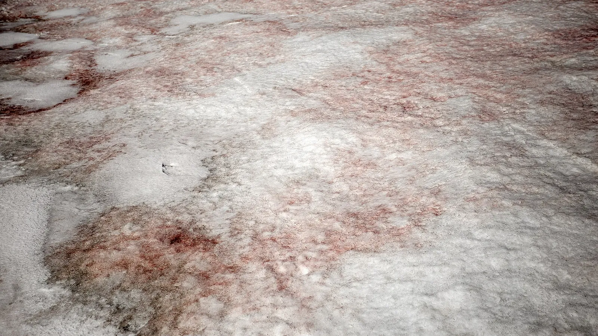
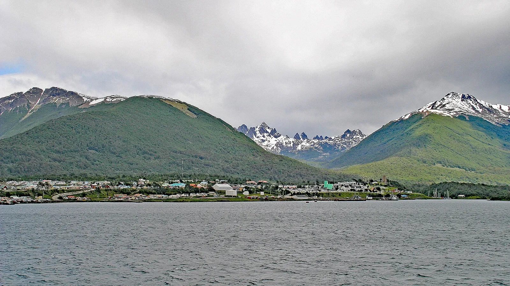

A luxury expedition voyage that sails one way and flies the other. A charter flight takes you from Santiago to Puerto Williams, the southernmost town in the world, where you board a small all-suite expedition ship. After two days crossing the Drake Passage you spend five days in the Antarctic Sound, on the Antarctic Peninsula and in the South Shetland Islands, with Zodiac cruises, landings and hikes every day and kayaking for experienced paddlers. From King George Island you fly back across the Drake in about 2 hours. Late February is the best time for whales and for penguin chicks before they go to sea. Because weather can delay the return flight from Antarctica, we strongly suggest an extra night in Santiago before your flight home.
See it for yourself
Photos from the journey











Day by day, in short
Daily travel brief
Distances are by road for the whole day. The full plan with timings comes with your detailed itinerary.
-
1
Arrive in Santiago (Saturday 19 February)
- We suggest arriving a day earlier: the journey from India takes 30 hours or more, and missing the charter means missing the ship.
-
2
Charter flight to Puerto Williams and board the ship
- Sail down the Beagle Channel: attend the safety drill on the first evening.
- Try on your boots early and ask the team for another size if needed.
-
3
The Drake Passage
- Seabirds from the deck: the Drake can be rough.
-
4
The Drake Passage, second day
-
5
The Antarctic Sound
- Landing sites are chosen each day by the expedition leader.
-
6
The Antarctic Peninsula
- Landing at a penguin colony: stay 5 m from penguins and never block their paths to the sea.
-
7
The Antarctic Peninsula
-
8
The Antarctic Peninsula
-
9
The Antarctic Peninsula
-
10
The South Shetland Islands
-
11
Fly back over the Drake to Puerto Williams
- Charter flight to Puerto Williams: the flight goes only in good weather.
-
12
Fly to Santiago (Wednesday 1 March)
- Tour ends at Santiago airport: book your flight home for the next day, or later, in case of weather delays.
- We can add Santiago, the Atacama Desert or Patagonia's Torres del Paine after the voyage.
Local know-how
Travel hacks from our desk
Hotel deposit
Use a credit card for the deposit or pre-authorisation at check-in, never a forex or debit card. Forex cards cannot hold funds, many hotels refuse them, and a credit-card hold is released faster.
Fitness and medical
Landings are by inflatable Zodiac boat onto rocky or snowy shores, and there is no hospital in Antarctica. You must be able to climb in and out of a Zodiac with help and walk on uneven ground. The ship has a doctor.
Wildlife and the rules
Stay at least 5 m from penguins and seals and further from whales on the water; give animals right of way. Boots and gear are cleaned before and after each landing so no seeds or soil reach Antarctica. Take nothing and leave nothing.
Weather decides
Every landing, Zodiac cruise and the flight over the Drake Passage depend on the weather. The expedition leader may change the plan at short notice; flexibility is part of the journey.
Layers
An expedition parka and waterproof boots are provided. Bring thermal base layers, a fleece, waterproof trousers, warm gloves, a hat, sunglasses and high-factor sunscreen: the light off the ice is intense.
When to go
Best time to visit for this journey
February for whales; December for penguin chicks.
The Antarctic season runs from November to March. November brings pristine snow and courting penguins; December and January have the longest days and penguin chicks; February and March are best for whales.
The package
What's included
Included
- 1 night in Santiago with breakfast
- 1 night in Puerto Williams with dinner and breakfast
- 9 nights in a veranda suite with butler service
- All meals and most drinks on board
- Charter flights Santiago to Puerto Williams, Puerto Williams to King George Island and back to Santiago
- Daily Zodiac cruises, landings, hikes and kayaking with the expedition team
- Expedition parka, waterproof boots, backpack and water bottle to keep
- Onboard tips and Wi-Fi
- 24/7 support from Blue Diamond Voyage
Not included
- International flights to and from Santiago
- Chile visa
- Travel insurance with emergency evacuation cover (required)
- Spa treatments
- Speciality restaurant dining
- Extra hotel nights
The detailed itinerary
Some journeys are planned. Ours are crafted.
The full 12-day plan is ready: hour-by-hour timings, drive times, temple dress codes, food for your diet and a route map for every day. Tell us your dates and your city, and we'll send it to you on WhatsApp, shaped around you.
- Hour-by-hour timings
- A route map for every day
- Hotel and room details
- Visa and entry steps
- Vegetarian and Jain dining
24/7 travel desk+91 97148 59797+91 98242 21400
Photo and map credits
- Arturo Merino Benítez International Airport: Christer T Johansson, CC BY 3.0, via Wikimedia Commons
- Puerto Williams: W. Bulach, CC BY-SA 4.0, via Wikimedia Commons
- Drake Passage: W. Bulach, CC BY-SA 4.0, via Wikimedia Commons
- Drake Passage: W. Bulach, CC BY-SA 4.0, via Wikimedia Commons
- Antarctic Sound: Godot13, CC BY-SA 4.0, via Wikimedia Commons
- Antarctic Peninsula: Virtual-Pano, CC BY-SA 4.0, via Wikimedia Commons
- Antarctic Peninsula: Virtual-Pano, CC BY-SA 4.0, via Wikimedia Commons
- Antarctic Peninsula: Virtual-Pano, CC BY-SA 4.0, via Wikimedia Commons
- Antarctic Peninsula: Virtual-Pano, CC BY-SA 4.0, via Wikimedia Commons
- South Shetland Islands: ravas51, CC BY-SA 2.0, via Wikimedia Commons
- King George Island: Tsy1980, CC BY-SA 4.0, via Wikimedia Commons
- Puerto Williams: W. Bulach, CC BY-SA 4.0, via Wikimedia Commons
- Maps: © OpenStreetMap contributors; road routes by OSRM.